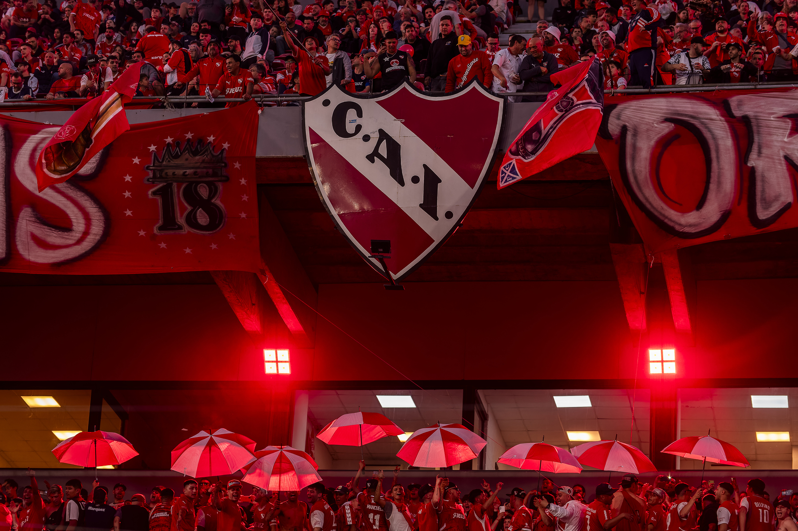

Galería de el Rojo
Recorré en imágenes la pasión por Independiente. Desde glorias históricas hasta momentos inolvidables en la cancha, esta galería celebra nuestra identidad y orgullo como hinchas del Rey de Copas.


